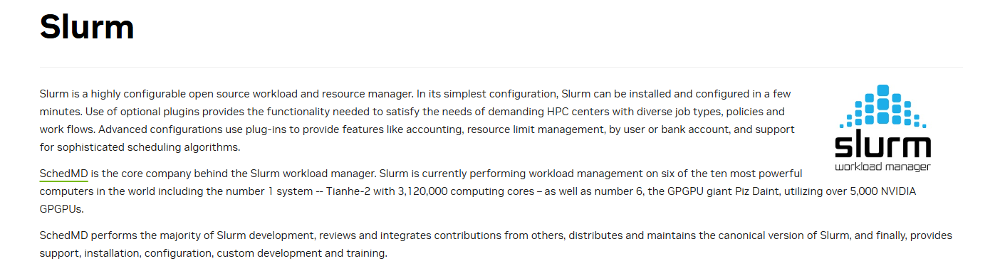

在公司集群上用 SLURM 跑多机多卡训练
相信大家一开始最头疼的任务之一，就是把一个已经支持分布式训练的模型跑到多台机器上。理论上听起来很简单——代码已经写好了，只需要run就行。但真正上手之后才发现，集群环境、网络配置、进程同步……每一个环节都有坑。遂出现这篇博客记录一下完整的流程。
为什么要用 SLURM？

公司的 GPU 集群统一由 SLURM（Simple Linux Utility for Resource Management）管理。SLURM 本质上是一个作业调度系统，负责在多个用户之间公平地分配计算节点上的 CPU、GPU 和内存资源。
相比直接 ssh 到机器上手动启动进程，SLURM 有几个显著优势：
- 免守护终端：任务提交后即在后台运行，不需要
tmux或screen保持会话。所有输出会写入.out日志文件。 - 多节点一键分发：多机任务时，SLURM 可以一次性向所有指定节点提交，不需要手动逐台
ssh。 - 集群状态透明：通过
squeue查看所有正在运行的任务，通过sinfo -N查看节点状态，便于协调资源使用。
分布式训练基础
在进入脚本细节之前，先简单梳理一下分布式训练的核心思路。
由于单张 GPU 显存有限，既无法容纳超大模型，也难以使用足够大的 batch size，因此需要将计算分散到多张乃至多台机器的 GPU 上。主流的并行方式分为两类：
- 数据并行（Data Parallelism）：每张 GPU 上加载完整模型副本，输入 batch 被切分后分别计算梯度，再汇总更新参数。优点是实现简单、吞吐量大；缺点是每张 GPU 的显存占用并不减少，当模型本身就放不进单卡时无能为力。
- 模型并行（Model Parallelism）：将模型本身拆开，不同 GPU 负责不同部分。包括张量并行（切分权重矩阵）、流水线并行（切分层）和序列并行（Sequence Parallel，切分 token 序列）等。其中序列并行能显著降低单卡显存，但通信开销大，速度约慢一倍，建议只在显存确实不足时启用。
实际工程中两者往往结合使用。本文以 torchrun 作为启动器，ColossalAI 作为并行框架为例。
编写 SLURM 脚本
一个完整的 SLURM 训练脚本（train.sh）由以下几个部分组成。
资源分配
脚本开头以 #SBATCH 指令向调度系统申请计算资源：
1 | |
几个值得注意的地方：
--ntasks-per-node=1是多机分布式训练的惯用设置。每个节点只有一个 SLURM 任务，但该任务内部通过torchrun再启动多个进程（每张 GPU 对应一个）。--gres=gpu:8中的gres是 Generic RESources 的缩写，用于申请 GPU 等非标准资源。--signal=USR2@120是一个优雅退出的机制，可以在程序中捕获该信号，在任务被强制终止前保存训练状态。
环境配置
资源声明之后，需要手动设置运行环境。集群上的节点环境通常不会自动继承 master 终端的配置，因此需要显式指定。
配置 CUDA 路径时，PATH 采用追加方式，但 LD_LIBRARY_PATH 和 CUDA_HOME 必须覆盖而非追加——否则系统可能混用多个 CUDA 版本的库，导致难以排查的运行时错误：
1 | |
激活 conda 虚拟环境：
1 | |
在脚本中显式激活环境有一个额外好处：提交任务时 master 节点无需预先激活同名环境。
其他关键环境变量：
1 | |
OMP_NUM_THREADS 的设置需要计算：若每节点 64 个 CPU 核心、8 张 GPU，则 8 个进程各分配 8 个线程恰好用满 CPU。NumPy、MKL、OpenBLAS 等底层计算库均依赖 OpenMP 进行 CPU 并行加速，该参数若不设置，默认值可能导致线程数远超核心数，产生大量上下文切换开销。
NCCL 通信配置
多机训练最容易出问题的环节是节点间通信。我们的集群使用 InfiniBand（IB） 网络，这是一种专为 HPC 场景设计的高带宽、低延迟互联标准，相比以太网有数量级的性能优势。GPU 间的集合通信（all-reduce、broadcast 等）由 NVIDIA 的 NCCL（NVIDIA Collective Communications Library）负责调度。
启用 InfiniBand：
1 | |
多机通信失败的最常见原因是 NCCL 选错了网卡。用 ip addr 先查清楚每台节点的网口，再决定哪些需要排除：
1 | |
针对 InfiniBand 的深度调优：
1 | |
注意：
NCCL_IB_HCA、NCCL_IB_GID_INDEX等参数的具体值依赖于机器的硬件配置，需要在目标节点上执行ibstat或联系集群管理员确认，不能照搬。
获取节点信息
SLURM 在运行时会将当前作业分配到的节点列表存入环境变量 $SLURM_JOB_NODELIST，但格式是压缩的（如 node[110-111]），需要用 scontrol 展开，再提取头节点（master）地址供 torchrun 使用：
1 | |
打印关键信息到日志，便于事后核查实验配置：
1 | |
启动多节点训练
最后，遍历节点列表，在每个节点上通过 srun 启动 torchrun。关键在于除最后一个节点外，所有 srun 命令都加 & 放入后台，最后一个节点的命令在前台运行并等待所有节点完成：
1 | |
torchrun 参数说明：
| 参数 | 含义 |
|---|---|
--nproc_per_node |
每节点启动的进程数，通常等于每节点 GPU 数 |
--nnodes |
总节点数 |
--node_rank |
当前节点的排名（0 为 master） |
--master_addr |
master 节点的 IP 或主机名 |
--master_port |
通信端口，确保未被占用 |
这种逐节点循环提交的方式，虽然比某些"一行命令多节点"的方案稍显繁琐，但可靠性更高——每个节点的 node_rank 明确指定，不依赖 SLURM 的隐式行为。
提交任务
脚本写好后，一行命令提交：
1 | |
提交后可用 squeue -u $USER 查看任务状态，用 tail -f <job_id>.out 实时跟踪日志输出。
小结
完整的 SLURM 多机训练脚本可以拆解为五个层次：资源申请 → 环境初始化 → 通信配置 → 节点发现 → 进程启动。尤其是 NCCL 的网卡配置，要根据实际硬件逐项排查。